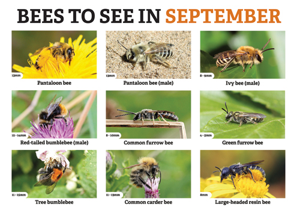

Urban Bees helps bees in towns and cities
We improve forage and habitat in urban areas and educate people about the importance of bees.
Rooftop rewilding
Climate and nature are intertwined. We can’t mitigate climate change without restoring nature so it can provide some of the solutions. Planting city roofs with bee-friendly flowers, shrubs and trees that bloom sequentially year-round, and installing bee hotels and other nesting sites, is a local and tangible way to restore nature for wild bees and other pollinators, and to increase biodiversity.
Bees to see in September
Our monthly newsletter has tips on how to identify bees and help them.
Bees are one of nature's wonders. Over 250 different UK bee species pollinate plants as they collect their food and only the honeybee make delicious honey.
Bees may do well in cities due to the variety of trees and flowers. They eat only pollen and nectar obtained from the plants.
Alison's radio interview
Listen to Alison on BBC Radio 4 Today programme talking about solitary bee hotels.
Alison's TedX talk
Food for bees and pollinators
Trees and plants are the source of bee's food.
Click here to see our Trees for Bees and Plants for Bees lists